V2V HMI
PROJECT 05 · MOBILITY V2V UX
안전 정보만 주고받는 V2V 통신,
운전자 간 감성적 소통은 어떻게 전달할까요?
자율주행 차량 간 커뮤니케이션: 주행 시나리오 기반 차량 간 상호작용을 위한 시각적 소통 방식 제안
PERIOD
2024.09 – 2024.12
ROLE
팀원 (4인 팀)
MY PART
리서치 · 기술 표준 조사 · 설문 데이터 분석 · 컬러 코딩 가이드라인 정리
WITH TEAM
기획 · 리서치 · 설문 설계 · 프로토타입 · 사용성 평가
PAPER
Design Works 8권 2호 · 한국HCI학회 2025 · 제3저자 · 게재
Chapter 01
배경과 문제
01 · Background
운전자들은 손짓과 비상등으로
경고와 감사, 양보를 주고받아요
양보를 받으면 비상등이나 손짓으로 고마움을 전하고, 위험을 알릴 때는
비상등과 클락션을, 양보할 때는 방향지시등과 손짓을 써요. 짧은 신호지만 낯선
운전자끼리 의도를 맞추고 협력하게 만드는 소통이라, 자율주행에서도 이어가야 할 출발점으로 보았어요.
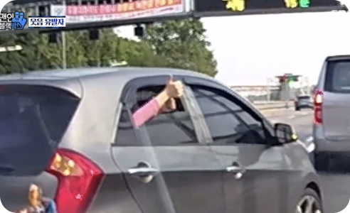
HAND GESTURE
손짓
“잠시 멈추세요”, “양보 감사합니다”를
손으로 전해요
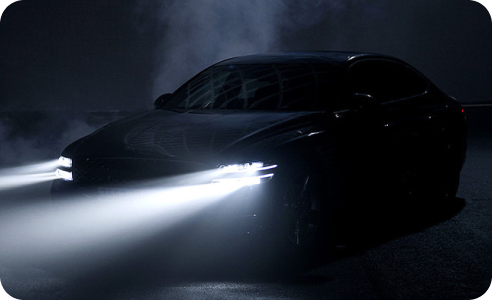
LIGHTING
비상등 · 상향등
깜빡임으로 인사, 경고, 양해,
감사를 전해요
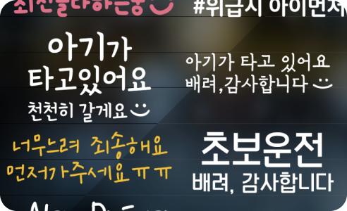
PRINTING
스티커
초보운전, 아이가 타고 있어요처럼
차량 상태를 알려요
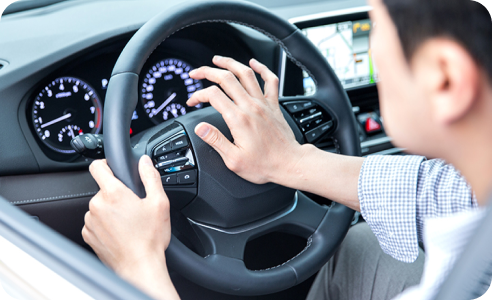
SOUND
클락션
위험을 알리거나
상대 운전자에게 주의를 줘요
출처: 한국지엠 톡 블로그 · 도로 위 운전자 간 신호 유형
Conclusion
운전자 간 신호는 도로 위 협력을 만들지만, 자율주행 차량 간 통신에서는 아직 충분히 구현되지 않았어요.
02 · Limitation
기존 V2V 통신은 안전성 중심으로 다뤄져
수동 주행의 소통을 반영하지 못했어요
현재 상용화된 V2V는 교차로 충돌 방지, 신호 정보, 군집 주행처럼 안전과 교통
효율을 위한 정보를 주고받아요. 차량 간 통신 표준 SAE J2735도 위치, 속도,
신호 상태 같은 메시지만 정의하고, 감사나 양보 같은 감성적 메시지는 정의하지
않아요. 그래서 안전 정보 교환을 넘어, 수동 주행에서 오가던 소통을 자율주행
환경에 맞게 다시 설계해야 한다고 보았어요.
상용화된 V2V 사례
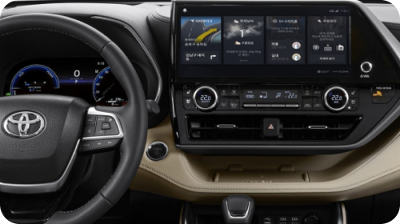
LEVEL 2
도요타 ITS Connect
교차로 충돌 방지와
신호등 정보 제공
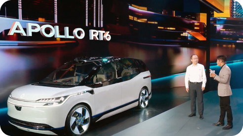
LEVEL 3–4
바이두 아폴로
V2X로 도심 로보택시와
버스 운행
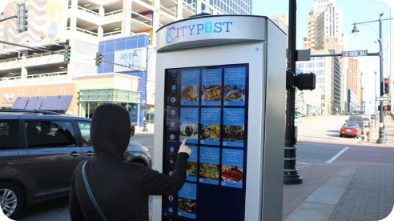
LEVEL 2–3
미국 스마트 시티
V2V·V2I로 실시간
교통 정보 공유
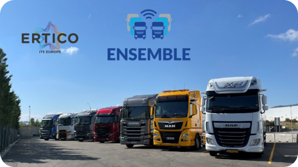
LEVEL 1–2
유럽 트럭 플래투닝
군집 주행으로
연료 효율과 안전성 향상
SAE J2735 정의 메시지
V2V · V2I 통신 메시지 표준
BSM
기본 안전 메시지
위치 · 속도 · 가속도 · 방향 · 차량 크기
MAP
도로 지도 정보
도로와 교차로 구조
SPaT
신호 상태
신호등의 현재 상태와 남은 시간
EVA
응급 차량 알림
구급차 · 소방차 접근 정보
TIM
여행자 정보
경로 · 위험 상황 · 교통 상태
—
감성적 메시지
감사 · 양보 · 사과 — 정의 없음
출처: SAE J2735 (2024.09)
Conclusion
자율주행 차량 간 소통은 안전 정보 교환을 넘어, 수동 주행의 소통을 자율주행 환경에 맞게 재해석해야 해요.
03 · Prior Research
보행자와의 소통 연구는 이어졌지만,
차량 간 소통의 디자인 연구는 부족했어요
보행자와 차량 사이에서는 eHMI와 픽셀 라이트처럼 시각 신호로 의도와 감정을
전하는 연구가 이어졌어요. 차량 간 소통이 탑승자의 안정감과 신뢰를 높인다는
연구도 있었지만, 탑승자가 그 소통을 어떻게 보고 다루는지에 대한 디자인
연구는 부족했어요.
차량 외부 신호
픽셀 라이트
애니메이션
주행 상황과 감정을 빛으로 전해
차량 간 오해를 줄일 수 있어요
김문준, 차량용 라이트 커뮤니케이션을 위한
픽셀 라이트 이팩트 연구
보행자 · 외부 신호
의도별 eHMI
디자인 컨셉
의도에 맞는 색상과 표시 방식이
보행자 반응을 바꿔요
송지훈 외 (2024), 디지털콘텐츠학회논문지
차량 간 소통
협력적 주행과
승객의 신뢰
차량 간 실시간 정보 교환이
승객의 안정감과 신뢰를 높여요
Liu et al. (2017), Science China
Technological Sciences
차량 간 소통
V2V 상용화의
조건
직관적인 인터페이스가 있어야
사용자가 V2V를 받아들여요
Wang et al. (2019), Journal of Network
and Systems Management
04 · Question
자율주행 3단계에서 감성적 소통과
운전 의도는 어떻게 전달될 수 있을까요?
수동 주행의 소통이 언제, 어떤 방식으로 일어나는지 알아야 자율주행 3단계에서
무엇을 전달할지 정할 수 있어요. 그래서 상황을 파악하고, 인터페이스를
설계하고, 그 효과를 확인하는 세 질문으로 나눴어요.
RQ1
수동 주행의 차량 간 소통은
어떤 상황에서 일어나고,
자율주행 3단계에서는
어떤 방식으로 나타날까요?
RQ2
자율주행 3단계의 V2V 소통을 위한
차량 내부 인터페이스는
어떻게 구성해야 할까요?
RQ3
제안한 인터페이스는
차량 간 소통에
얼마나 효과적일까요?
Process
프로젝트 진행 과정
설문으로 수동 주행의 소통 의도와 표현 방식을 먼저 파악하고, 그 결과를
기준으로 인터페이스를 설계한 뒤 사용성 평가로 확인하는 순서로 진행했어요.
PHASE 01
소통 의도 파악
1
Desk Research
도로 위 소통 방식 · V2V 기술 동향 조사
2
Survey
수동 주행 중 소통 경험 설문
3
Analysis
의도별 상황 · 표현 방식 분류
PHASE 02
인터페이스 설계
1
Ideation
차량 간 메시지 표현 아이디어
2
Layout
입력 · 출력 영역 구성
3
Prototype
주행 상황별 보내기 · 받기 화면 제작
PHASE 03
효과 검증
1
Usability Test
소통 의도 입력 · 출력 과제 수행 평가
2
Interview
호감도 · 유용성 · 사용 의도 인터뷰
3
Synthesis
개선 방향 · 설계 원칙 도출
Chapter 02
소통 의도 분석
05 · Survey
운전자 73명에게
여섯 가지 소통 의도의 경험을 물었어요
수동 주행에서 어떤 소통이 실제로 오가는지 확인하려고, 감사, 양보, 주의, 정지,
사과, 인식 여섯 의도마다 경험 여부, 표현 방식, 발생 상황, 빈도를 물었어요.
의도별로 같은 질문을 던져, 의도 사이의 차이를 비교할 수 있게 했어요.
설문 참여자
73
명 · 운전면허 소지자
평균 연령 42.3세 (SD 12.6) · 평균 운전 경력 8.9년 (SD 4.3)
주로 운전하는 지역
도심 55%
교외 · 주택가 30%
고속도로 15%
차량 유형
승용차 70%
전기 · 하이브리드 20%
SUV 10%
설문 구성
의도마다 같은 네 가지를 물었어요
감사
양보
주의
정지
사과
인식
01
경험 여부
다른 차량과 이 의도를 주고받은 적이 있는지
02
표현 방식
어떤 신호로 표현했는지
03
발생 상황
어떤 주행 맥락에서 일어났는지
04
빈도
전체 운전 경험에서 얼마나 자주 있는지
의도별 경험 비율
n = 73 · 주고받은 경험이 있다고 답한 비율
양보
100%
73명
감사
98.6%
72명
사과
91.8%
67명
주의
80.8%
59명
인식
58.9%
43명
정지
53.4%
39명
*인식은 다른 의도와 주행 상황이 겹치고 독립된 표현 방식으로 구분되지 않아 분석에서 제외했어요.
06 · Expression
감사, 사과, 정지, 주의를
모두 비상등으로 가장 많이 표현했어요
의도별 표현 방식을 겹쳐 보니 감사, 사과, 정지, 주의 네 의도에서 모두 비상등이
1순위였어요. 고마움과 경고처럼 성격이 다른 의도가 같은 신호로 전달되고 있어,
의도마다 구분되는 표현이 필요하다고 보았어요.
감사
THANKING
비상등
94.4%
손 흔들기
26.4%
미소 짓기
16.7%
사과
APOLOGY
비상등
91%
손 흔들기
29.9%
고개 숙이기
22.4%
정지
STOPPING
비상등
74.4%
브레이크 램프
23.1%
손 신호
23.1%
주의
CAUTION
비상등
64.4%
경적 짧게
61%
헤드라이트
32.2%
양보
PASSING
방향지시등 · 감속
61.6%
손 신호
26%
헤드라이트
11%
의도별 표현 방식 상위 3개 · 복수 응답 · 설문 응답자 중 해당 의도 경험자 기준
“차선변경시 비상등을 켜서 인사합니다.”
설문 응답 · 감사
“좁은도로 진입으로 인해 비상등으로 감사
표현합니다.”
설문 응답 · 양보
“진짜 위험할 때는 경적을 울리고, 대부분은
비상등으로 대체한다.”
설문 응답 · 주의
Conclusion
비상등 하나가 감사, 사과, 정지, 주의를 모두 대신하면서, 상황마다 어떤 의도인지 분명하지 않았어요.
07 · Classification
다섯 가지 의도를
감성적 의도와 기능적 의도로 분류했어요
주행 관련 중요도와 성격을 기준으로 다섯 의도를 나눴어요. 감사, 양보, 사과는
주행에 필수는 아니지만 운전자 간 감성적 의사소통을 담당하고, 주의와 정지는
탑승자가 반드시 받아야 하는 안전 정보예요. 이 구분이 이후 인터페이스에서
의도를 배치하고 표현하는 기준이 됐어요.
EMOTIONAL
주행 관련 중요도 낮음
감성적 의도
주행에 꼭 필요하지는 않지만, 운전자 간 감성적 의사소통을 담당해요
감사
“감사해요”
양보
“먼저 가세요”
사과
“죄송해요”
FUNCTIONAL
주행 관련 중요도 높음
기능적 의도
탑승자가 반드시 받아야 하는 안전 정보예요
주의
“주의하세요”
정지
“정지할게요”
STAKEHOLDER MAP
차량 간 상호작용은
차량 내부와 외부로 나뉘어요
①
탑승자 ↔ 차량
차량 상태를 전달받고 명령을 입력해요
②
탑승자 ↔ 탑승자
자동화된 움직임에 대해 의견을 나눠요
③
내 차량 ↔ 타 차량
주행 의도와 상태를 신호로 주고받아요
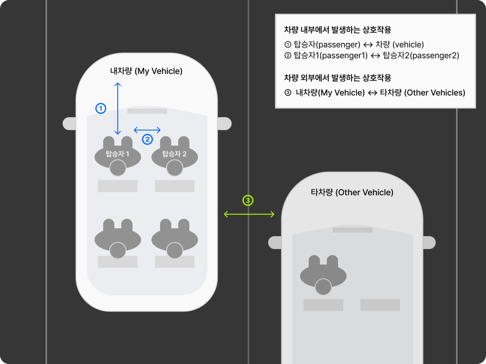
Chapter 03
인터페이스 설계
08 · Design Criteria
의도의 성격에 따라
보이는 위치와 표현 방식을 다르게 정했어요
설문에서 비상등 하나가 여러 의도를 대신하고 있었고, 의도는 주행 관련
중요도에 따라 감성적 의도와 기능적 의도로 나뉘었어요. 그래서 의도마다
구분되는 표현, 중요도에 맞는 노출 위치, 주행 중에도 빠른 입력을 기준으로
아이디어를 좁혀갔어요.
설문에서 확인한 것
설계 기준
06 · Expression
비상등 하나로 감사, 사과, 정지, 주의를 모두 표현
의도마다 구분되는 표현
텍스트와 아이콘을 함께 쓰고, 의도별 색을 나눠요
07 · Classification
감성적 의도는 주행 관련 중요도가 낮음
중요도에 맞는 노출 위치
받은 감성 메시지가 주행 정보를 가리지 않게 해요
07 · Classification
기능적 의도는 탑승자가 반드시 받아야 할 안전 정보
주행 중에도 빠른 입력
손이 닿는 곳에서 주의 · 정지를 먼저 고를 수 있게 해요
기준에 비춰 검토한 초기 아이디어
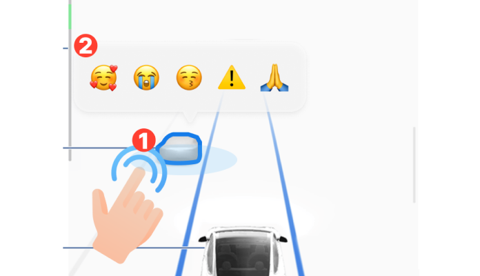
SEND · A
3D 맵에서 차량 선택
상대 차량을 고른 뒤 감정 이모지를 보내요
차량을 고르는 동안 전방 주시가 어려울 수 있어요
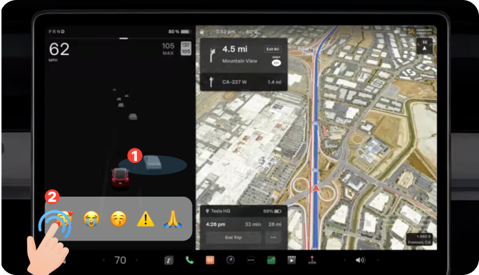
SEND · B
하단 바에서 2단계 입력
화면 아래 바에서 두 번의 터치로 보내요
보이는 영역과 조작하기 쉬운 영역을 나눠 볼 필요가 있었어요
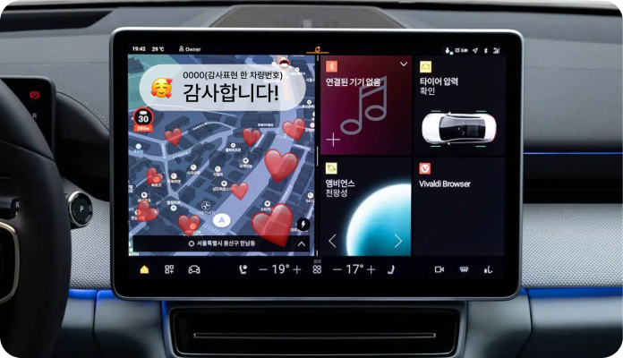
RECEIVE
상단 알림 + 이모지 애니메이션
받은 메시지를 화면 위에 크게 띄워요
중요도가 낮은 감성 메시지가 주행 정보를 가릴 수 있어요
09 · Display
모바일처럼 익숙한 터치 입력을 위해
17인치 중앙 디스플레이를 선정했어요
주행 중 의도를 직접 골라 보내야 하는 기능이라, 손이 쉽게 닿고 조작이 익숙한
화면이 필요했어요. 중앙 디스플레이는 모바일처럼 터치로 조작할 수 있고,
내비게이션과 차량 상태를 분할 화면으로 보여줘 커뮤니케이션 영역을
함께 둘 수 있었어요.
차량 내부 디스플레이 위치
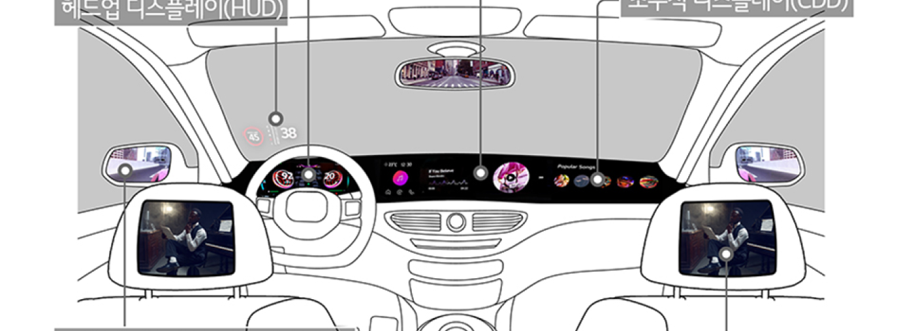
디스플레이 후보
계기판
CLUSTER
운전자 정면 · 주행 정보 표시
HUD
HEAD-UP DISPLAY
전방 시야 위 · 정보 출력 중심
중앙 디스플레이
CID
터치 입력 · 분할 화면 구성
선정
익숙한 사용자 경험
모바일처럼 익숙한 방식으로 정보를 다뤄요
모듈화 · 분할 화면
내비게이션 · 차량 상태 · 미디어를 나눠 보여줘요
10 · Layout
입력 영역은 기능적 의도를 앞에,
출력 영역은 내비게이션 가장 아래에 배치했어요
입력 영역은 내비게이션 정보 바로 아래에 두어 손이 쉽게 닿게 하고, 주의·정지를
감사·사과·양보보다 앞에 놓았어요. 받은 의도는 주행 정보보다 중요도가 낮아,
운전자의 주의를 과도하게 끌지 않도록 출력 영역을 내비게이션 영역 가장
아래에 구성했어요.
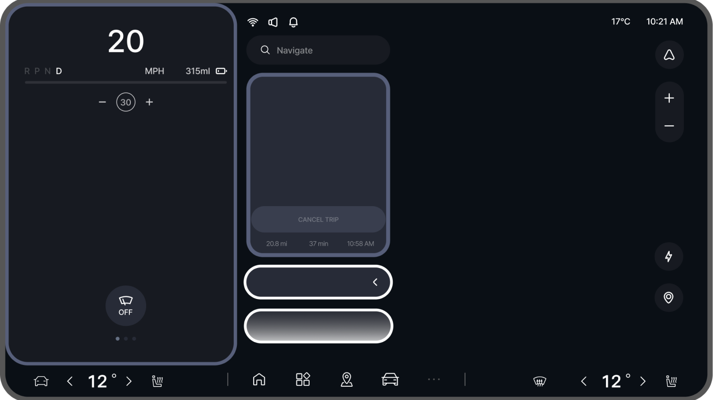
1
2
1
입력 영역
INPUT
내비게이션 정보 바로 아래
주의 · 정지를 앞에, 감사 · 사과 · 양보를 뒤에 배치
2
출력 영역
OUTPUT

내비게이션 영역 가장 아래
받은 의도가 주행 정보보다 앞서지 않게 배치
11 · Color Coding
다섯 가지 의도에 색상을 정하고,
감사와 사과는 명도로 구분했어요
의도마다 색을 다르게 두어 화면을 오래 보지 않아도 어떤 의도인지 구분할 수
있게 했어요. 도로 표지와 경고등의 색 관습을 따르고, 같은 청색 계열인 감사와
사과는 전달의 무게에 따라 명도로 나눴어요.
기능적 의도
감성적 의도
주의
노란색
경고와 주의를 즉각 환기하는
도로 표지 · 경고등의 색
정지
붉은색
즉각적인 행동을 요구하는
메시지에 쓰이는 색
감사
밝은 청색
신뢰와 안정감을 주는 긍정적
메시지의 색
양보
초록색
양보와 우회 같은 긍정적 행동을
전하는 색
사과
어두운 청색
감사와 같은 청색 계열, 더 무거운
메시지라 명도를 낮춤
색상 근거: 송지훈 외 (2023), 한국HCI학회 학술대회 · 송지훈 외 (2024), 디지털콘텐츠학회논문지
12 · Prototype
차선 변경 상황에서
의도를 보내고 받는 프로토타입을 만들었어요
주행 중 다른 차량이 차선을 양보하거나 갑자기 끼어드는 상황을 가정해, 의도를
보내는 흐름과 받는 흐름을 프로토타입으로 만들었어요. 다섯 의도마다
보내기부터 받기까지 이어지는 장면을 영상으로 담았어요.
주의
정지
감사
양보
사과
보내는 상황
감사
입력 바를 열어 직접 골라 보내면, 상대 차량에 “Thank you so much”로 전달돼요
Chapter 04
사용성 평가
13 · Usability Test
운전자 6명과
호감도, 인지된 유용성, 사용 의도를 평가했어요
인터페이스가 소통을 실제로 돕는지 보려면 보내는 상황과 받는 상황을 모두
써봐야 했어요. 그래서 참여자 6명이 상황 영상을 보고 맞는 의도를 보내는
과제와, 다른 차량이 보낸 의도를 확인하는 과제를 수행했어요. 이후 입력과 출력
영역을 나눠 세 지표를 5점 척도로 묻고 인터뷰를 진행했어요.
평가 참여자
6
명 · 운전 경력 3년 이상
평균 연령
36세 (SD 14.34)
평균 운전 경력
10.5년 (SD 8.78)
자율주행 기능 사용 경험
6명 중 2명
평가 진행
TASK 1
보내기
상황 영상을 보고
맞는 의도 보내기
TASK 2
받기
다른 차량이 보낸
의도 확인하기
SURVEY
5점 척도
입력 · 출력 영역별로
세 가지 평가
INTERVIEW
인터뷰
개선이 필요한 점과
사용 맥락
LIKABILITY
호감도
기능에 대한 시각적 · 감정적 반응
PERCEIVED USEFULNESS
인지된 유용성
차량 간 소통에 실제로 도움이 됐는지
INTENTION TO USE
사용 의도
앞으로도 계속 쓰고 싶은지
14 · Task Result
주의 신호를 보낼 때만
6명 중 5명이 버튼을 찾지 못했어요
감사, 양보, 사과는 6명 모두 문제없이 보냈고, 정지에서는 1명이 막혔어요.
주의에서만 5명이 버튼을 바로 알아보지 못했는데, 낯선 인터페이스에 작은
버튼이 더해진 결과였어요. 급하게 눌러야 하는 기능적 의도일수록 버튼이 더
크고 분명해야 한다는 점을 확인했어요.
참여자별 의도 보내기 과제 결과
완료
이슈 있음
기능적 의도
감성적 의도
참여자 · 운전 경력
주의
정지
감사
양보
사과
P1
4년
이슈 있음
완료
완료
완료
완료
P2
9년
이슈 있음
이슈 있음
완료
완료
완료
P3
4년
이슈 있음
완료
완료
완료
완료
P4
6년
이슈 있음
완료
완료
완료
완료
P5
13년
완료
완료
완료
완료
완료
P6
27년
이슈 있음
완료
완료
완료
완료
결과
이슈 5 · 완료 1
이슈 1 · 완료 5
완료 6
완료 6
완료 6
주의 신호의 이슈는 낯선 인터페이스로 인한 혼란과 작은 버튼 크기로 버튼을 바로 알아보지 못한 경우였어요.
15 · Response
감성적 의도 표현은 유용하다고 했지만,
주의·정지는 비상등이 익숙하다고 했어요
사용 의도는 입력과 출력 영역 모두 평균 3.83점으로 세 지표 중 가장 높았어요.
비상등으로만 소통하던 답답함이 줄어든다는 반응이 있었던 반면, 급박한
주의·정지 상황에서는 화면 신호만으로 충분한지 걱정하는 의견이 나왔어요.
영역별 평균 점수
입력 영역
출력 영역
5점 척도 · n = 6
LIKABILITY
호감도
입력
3.67
출력
3.5
PERCEIVED USEFULNESS
인지된 유용성
입력
3.2
출력
3.17
INTENTION TO USE
사용 의도
입력
3.83
출력
3.83
“항상 비상등으로만 커뮤니케이션 했던 게
모호했었는데, 유용하다고 느껴진다.”
P1 · 인터뷰
“지금은 수화로만 대화를 하고 있는 것 같다.”
P4 · 인터뷰
“주의나 정지는 0.1초 사이에 움직이는 일이어서,
이렇게만 전달되어도 되는 정보가 맞는지 위험할
것 같다.”
P6 · 인터뷰
Chapter 05
설계 원칙과 과제
16 · Design Principles
차량 간 소통은 빠르게 보내고,
분명하게 받을 수 있어야 해요
평가에서 여러 참여자가 반복해서 짚은 의견과 일부 참여자의 제안을 나눠,
2차 인터페이스에 적용할 원칙으로 정리했어요. 공통 의견은 모두 의도를 보내고
받는 순간이 확실하게 느껴지는지에 대한 것이었어요.
공통 의견
여러 참여자가 반복해서 짚은 점
01
SEND
누르기 쉬운 버튼
급하게 눌러야 하는 상황에서도 바로 찾고 누를 수 있도록
버튼을 키워요.
“비상상황에서 급하게 눌러야 하니까 버튼은 좀 커져도 될
것 같다.”
02
RECEIVE
확실한 수신 · 전송 피드백
받은 의도는 소리나 반짝임으로 알리고, 보낸 의도는 전송
완료 상태를 보여줘요.
“비상등은 눌렀다 끄는 감각이 확실한데, 이 기능은
신호가 불분명하다.”
03
FUNCTIONAL
기능적 의도는 더 분명하게
주의 · 정지는 익숙한 비상등만큼 즉시 알아챌 수 있어야
하고, 탑승자에게 명확히 전달돼야 해요.
“주의, 정지 상황 표현 방식은 기존 비상등에 익숙하다.”
추가 제안
일부 참여자가 낸 개선 아이디어
눈높이에 맞는 정보 위치
받은 의도를 화면 하단보다 시선이 머무는 높이에 보여줘요.
P2
의미가 분명한 표현 방식
양보와 사과 아이콘의 의미가 겹쳐, 이모지 · 텍스트 조합을 나눠 검증해요.
P3 · P4
상황 기반 추천과 자동 전송
상황에 맞는 의도를 추천하거나 자동으로 보내 입력 부담을 줄여요.
P3 · P5
문화권에 따른 해석 차이
텍스트와 색을 받아들이는 방식이 문화권마다 달라 언어별로 검토해요.
P2
17 · Next Steps
제안한 인터페이스가 실제 주행에서도
소통을 돕는지 검증하는 게 다음 과제예요
이번 프로젝트는 설문으로 소통 의도를 정리하고, 시각 인터페이스를 운전자
6명과 평가하는 데까지 진행했어요. 남은 한계를 네 가지 과제로 정리했고,
그중 실제 주행 환경에서의 검증을 첫 번째로 두었어요.
논문에서 밝힌 한계와 다음 과제
과제
드러난 한계
다음 단계
01
실증 검증
사용성 평가를 실제 도로나 자율주행 환경이 아닌 영상과 프로토타입으로
진행했어요.
실제 주행 환경에서 인터페이스 검증
02
표본 규모
참여자 6명으로 진행해, 다양한 연령과 운전 경험을 충분히 담지 못했어요.
다양한 사용자 그룹을 대상으로 한 실험
03
청각 피드백
시각 인터페이스 위주로 설계해, 평가에서 공통으로 나온 청각 알림을 검증하지
못했어요.
청각 기능을 더한 2차 평가
04
표현 요소
의도별 색상, 텍스트, 아이콘, 배치를 하나씩 나눠 검증하지는 않았어요.
요소별 세부 사용성 검증
Next Project
01
보여주는 방식이 신뢰를 바꾼다: 온라인 리뷰 속성 시각화 설계와 검증
온라인 리뷰의 핵심 속성을 시각적으로 구조화하면, 소비자의 신뢰와 구매 의도는 어떻게 달라질까요?